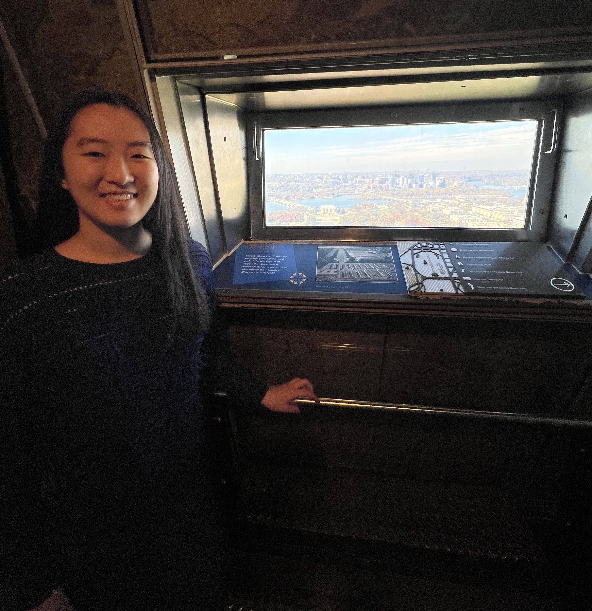
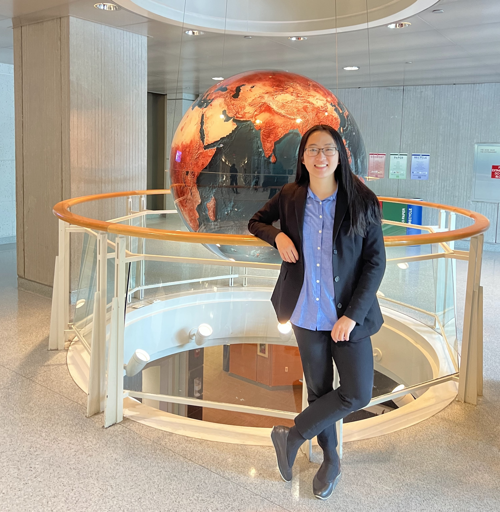
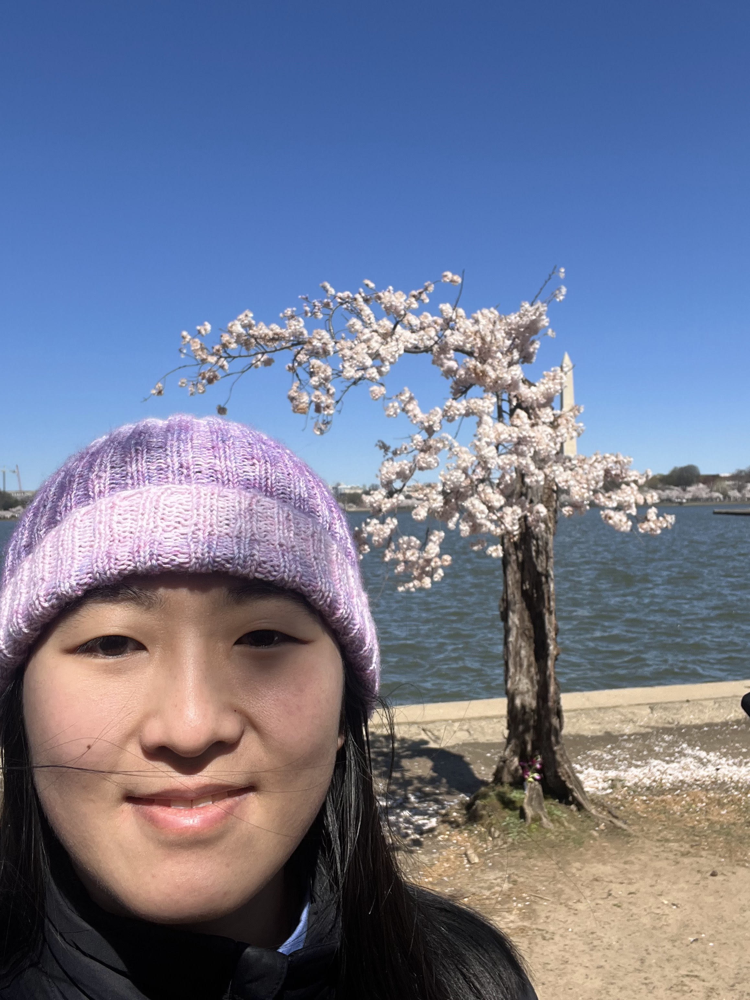

<!-- {% include base_path %}


{% for post in site.portfolio %}
  {% include archive-single.html %}
{% endfor %} -->





Shortly after I graduated from my undergraduate studies in May 2023, I returned to the World Bank Treasury in Washington, DC as a junior analyst in the banking operations division, having previously been an intern in Summer 2022. The Banking Operations department is one branch of the Treasury’s back office in charge of all transactions that enter and exit the bank. I mostly worked with the accounting team, which is responsible for bookkeeping, auditing, and remedying transaction issues.

In a little over a year, this position challenged my existing knowledge and stretched me to develop new abilities. I leveraged my technical skills to build several dashboards tracking bank charges and investigative cases that are still in use by my team. Most importantly, my position required regular liaising between not only other World Bank units, but also external partners such as banks, governmental agencies, and NGOs. I learned to communicate precisely, effectively, and appropriately, which remains an essential skill not only in my current tenure in academia, but also simply interacting with others. 

Being at the World Bank placed me in the midst of rapidly developing global initiatives. I witnessed large-scale policy change when I had the opportunity to sit in on a meeting with Chilean government officials establishing catastrophe bonds mitigating earthquake damage; I saw the impact of individual victories after my team unfroze a client’s funds after over two years of sanctions struggles. Even day-to-day, I was locating and allocating transactions as large as multi-million dollar infrastructure project funding and as small as World Bank employee parking passes. Impactful changes are made by important leaders meeting in the oval-shaped, glass-paned conference rooms we toured; they are also made in our inboxes through correspondences with clients who request our assistance. The World Bank has been an amazing first employer who has instilled in me the values I aim to hold throughout my career: interconnected cooperation, mutual respect, and affecting tangible change.
